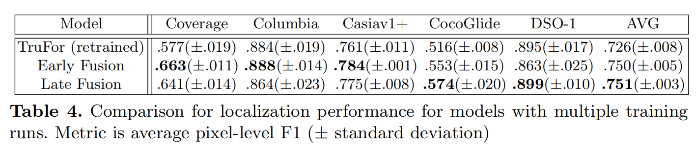

Exploring Multi-Modal Fusion for Image Manipulation Detection and Localization
Exploring Multi-Modal Fusion for Image Manipulation Detection and
Localization 

希腊信息技术研究所，研究和技术研究中心，希腊塞萨洛尼基
摘要
最近的图像操作定位和检测技术通常利用由噪声敏感滤波器产生的法医伪影和痕迹，如SRM和Bayar卷积。
在本文中，我们展示了在这种方法中常用的不同过滤器擅长于揭示不同类型的操作，并提供互补的法医痕迹。因此，我们探索了合并这些滤波器输出的方法，其目的是利用所产生的伪影的互补性来执行图像操作定位和检测（IMLD）。
我们提出了两种不同的方法：一种是从每个法医过滤器产生独立的特征，然后将它们融合（称为晚期融合），另一种是执行不同模态输出的早期混合并产生早期组合特征（这称为早期融合）。
我们证明了这两种方法在图像操作定位和检测方面都取得了具有竞争力的性能，在多个数据集上优于最先进的模型1。
方法
编码器解码器框架
图片分别经过阶梯分析丰富模型SRM（高通滤波器） , bayar 卷积之后和通过NoisePrint++提取的特征送入多尺度编码器进行编码，之后分别通过异常检测解码器和置信度解码器获得预测图和置信图，最后池化后通过篡改解码器，得到篡改可能分数。
特征融合方法（大模型）：
首先分别从NoisePrint++、SRM和bayar 卷积中提取RGB图像x的辅助特征。然后将每个辅助特征与原始RGB一起输入到一个双分支CMX编码器中，生成4尺度的特征图如图所示：
在每个尺度上，3个编码器的输出被连接起来，以产生编码器的最终输出f。我们使用与TruFor中相同的解码器架构来处理异常和置信解码器。
提出的另外一种特征融合方法（小模型）：
再次提取了RGB图像x的辅助特征、rbayar。然后每个输入通过卷积块C，生成早期特征fmod。然后将这3组特征映射连接起来，生成完整的早期特征集f ef。这些特征然后通过另一个卷积块C，产生混合特征f mf = C（f ef）。混合特征f mf和RGB图像x被用作双分支CMX编码器[34]的输入，其方式与TruFor中的相同。
这是一种特别轻量级的方法来扩展TruFor架构以处理多个辅助模式，因为它不会显著增加参数的数量（与TruFor的68.7M相比，是68.9M参数）。
实验：
与其他方法在F1参数上的比较：
其提出的两种特征融合方式除了在DSO-1上不如TruFor，剩下的都好于TruFor
特别是对于只包含复制移动伪造的覆盖数据集，我们的最佳方法比之前的最佳方法TruFor高了6.3%。
DSO-1数据集主要用于检测包含人的拼接图像。比TruFor落后3%。
专门与TruFor比较结果：
认为只是误差。
与其他方法在AUC参数上的比较：
可以发现
小模型显示出了卓越的性能，超过了最先进的平均水平。与之前的领先方法相比，AUC实现了近7%的显著改进，bAcc面实现了9%的显著改进。
大模型也表现出具有竞争力的AUC性能，但在bAcc方面略落后于TruFor模型。bAcc性能的这种差异可能归因于大模型的大小，这可能容易发生过拟合。进一步的研究和实验需要探索需要额外的正则化技术的可能性，以优化其性能的检测任务。
消融实验：
多模态特征输入的消融：
在本节中，为了对比各种过滤器（SRM，Bayar conv，NoisePrint++），采用了一个双分支CMX架构，其中每个过滤器作为RGB图像的辅助输入。
结果见表6。在这个训练过程中，bayar卷积层是可训练的，而SRM和NoisePrint则保持冻结。
我们可以看到，NoisePrint++基于编辑历史的训练有助于实现DSO-1的最佳性能，其中使用后处理操作覆盖操作，而SRM和bayar在编码和覆盖方面表现更好。
覆盖范围只包含复制移动操作，噪音打印的相机模型识别可能无法提供足够强大的法医痕迹，而编码道的操作是基于扩散的内画，可能导致不同于传统编辑历史的独特文物。因此，噪音打印在有效处理此类案件时遇到了困难。
鲁棒性分析：
观察在后处理程度逐渐加深下，模型性能的变化
在本节中，我们包括对不同质量下降的图像进行的实验，以证明我们的方法的鲁棒性。我们使用Casiav1+数据集，使用不同的内核大小进行高斯模糊，使用不同的质量因子进行JPEG压缩，并与TruFor进行比较。
图4中描述的结果表明，我们的两种融合方法在广泛的降解过程中都表现出良好的鲁棒性，在所使用的所有降解水平上保持了比TruFor的一致优势。